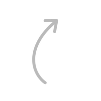

RH Conecta Angola
Academia de
Estágio
Preparando talentos para o mercado

Sobre nós
A RH Conecta Angola é uma academia profissional especializada em formação prática e estágio, criada para preparar talentos de acordo com as exigências do mercado angolano.
Nascemos para reduzir o fosso entre a teoria acadêmica e a prática profissional, promovendo uma formação ética e realista


Nosso próposito
Desenvolver profissionais competentes, éticos e empregáveis é a nossa missão. Buscamos capacitar os estagiários com habilidades práticas e teóricas, promovendo um impacto positivo nas organizações. Acreditamos na importância de alinhar formação e necessidades do mercado, preparando assim líderes do futuro.
- Missão
- Visão
- Valores
A missão da RH Conecta Angola é:
- Conectar talentos ao mercado de trabalho
- Promover formação prática em Recursos Humanos
- Oferecer acompanhamento técnico personalizado
- Desenvolver competências alinhadas às necessidades reais do mercado
- Garantir uma experiência de estágio enriquecedora e preparada para o futuro
A RH Conecta Angola visa ser a referência em formação prática de Recursos Humanos, destacando-se pela:
- Excelência na formação
- Alta empregabilidade dos estagiários
- Impacto positivo nas organizações
Juntos,construímos umfuturo mais promissor para o mercado angolano.
Étia e Responsabilidade
- Agimos com integridade, respeitando normas e valores em todas as interações.
Aprendizagem Prática
- Fomentamos a experiência real, promovendo o aprendizado em ambientes reais de trabalho.
Inovação em RH
- Implementamos novas abordagens e soluções criativas nas práticas de recursos humanos.
Excelência Profissional
- Buscamos a qualidade em tudo que fazemos, elevando nossos padrões continuamente.
Empregablidade
- Preparamos nossos estagiários para o mercado, focando em suas habilidades e competências.
Desevolvimento Humano
- Valorizamos o crescimento pessoal e profissional, investindo no potencial de cada indivíduo.
Soluções
Estágio Estruturado
O programa de estágio tem duração de três meses, proporcionando uma experiência profissional intensiva. Os estagiários são integrados em ambientes reais de trabalho desde o início.
Formação Prática
Nossos estagiários recebem formação prática focada em habilidades que são aplicáveis diretamente no mercado. Isso garante que estejam prontos para enfrentar desafios reais ao final do programa.
Acompanhamento e Mentoria
Durante o estágio, os participantes são acompanhados por mentores experientes que oferecem orientação contínua, ajudando a desenvolver competências e a maximizar a experiência de aprendizado.
Diferenciais Competitivos
Foco em Empregabilidade
A RH Conecta Angola prioriza a empregabilidade dos estagiários, oferecendo experiências práticas que os tornam mais competitivos no mercado de trabalho angolano e alinhados às expectativas das empresas.
Formação Prática
A formação prática é central na nossa abordagem, proporcionando aos estagiários a aplicação de conhecimentos teóricos em situações reais, desenvolvendo habilidades essenciais para o sucesso profissional.
Estágio Estruturado
Nossos estágios são estruturados e supervisionados, garantindo um acompanhamento de qualidade e feedback constante, permitindo que os estagiários cresçam e se desenvolvam em ambientes de trabalho reais.